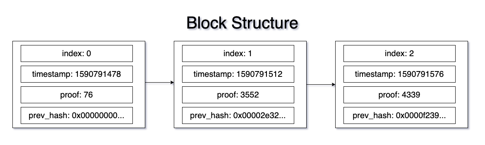
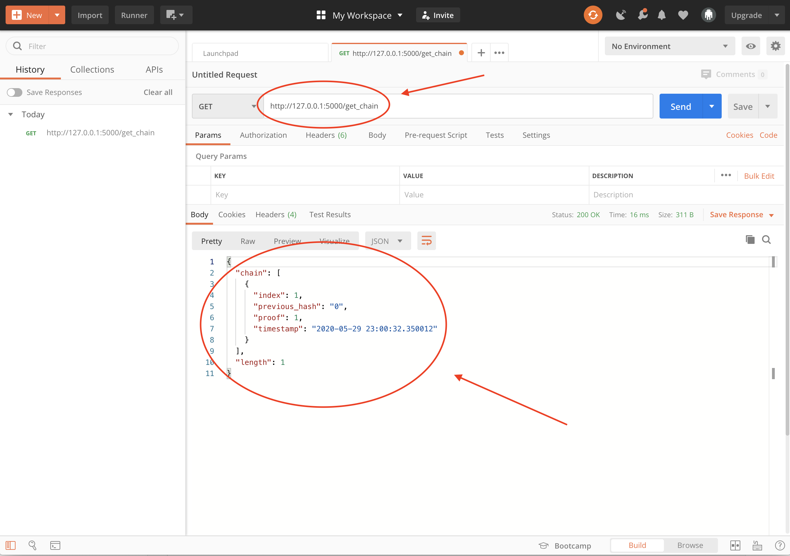
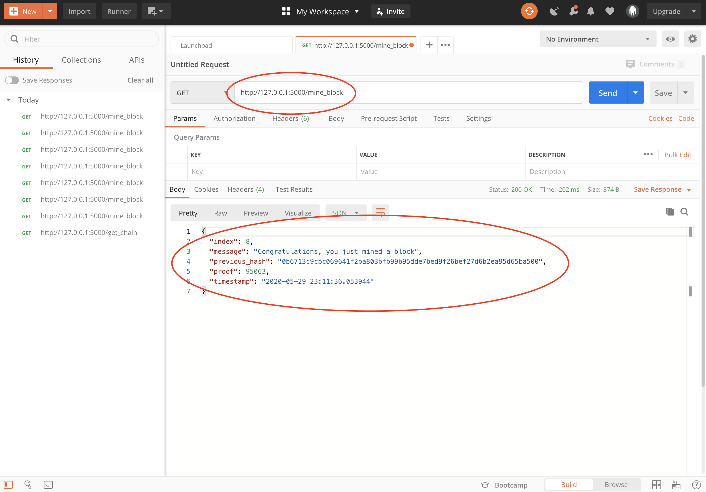
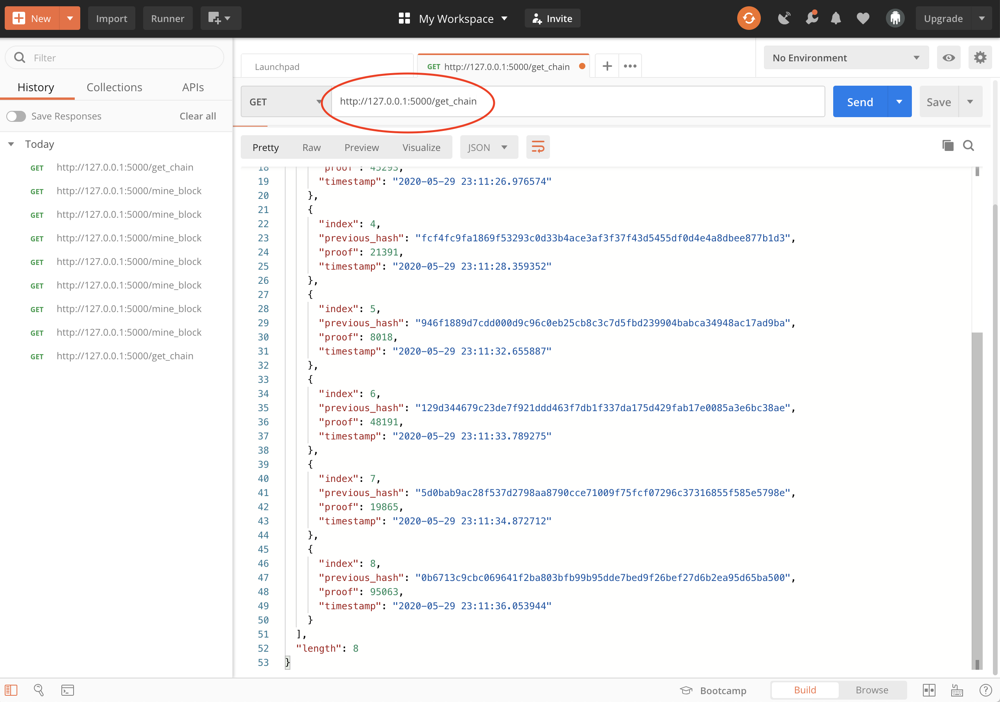
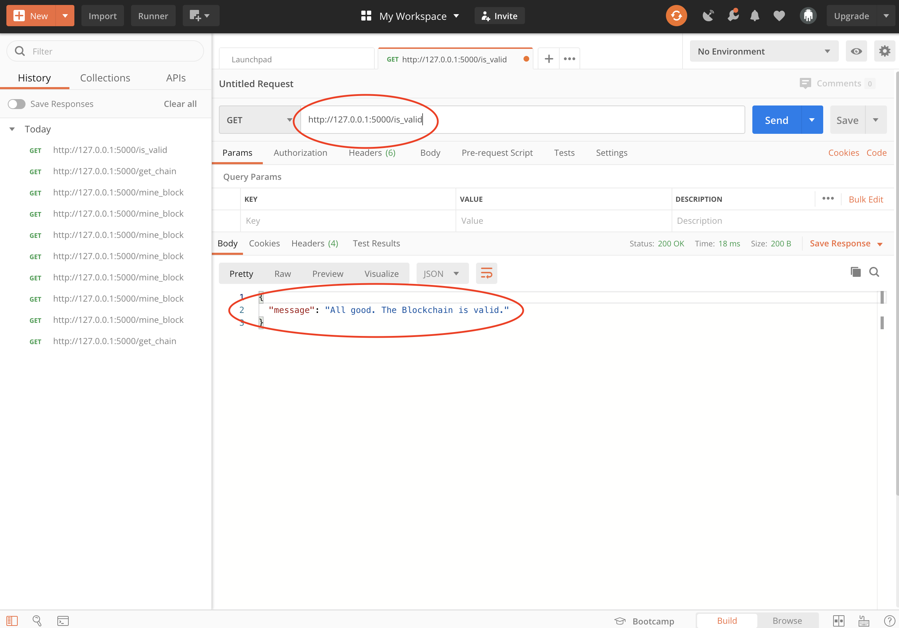

最近学了区块链的基本概念，不如亲自搭建一个区块链试一试。本文教你搭建一个简易的区块链。
区块链结构 Blockchain Structure
区块链是由一个个区块构成，每个区块中保存着一系列数据。鉴于我们要搭建一个简易的区块链，暂且在每个区块中存放下列数据：
- index：记录当前区块高度/区块编号；
- timestamp：记录当前区块的时间戳，即当前区块是何时被挖出的；
- proof：记录当前区块的验证数据，类似于PoW中的随机数；
- previous_hash：记录前一区块的哈希值。
当然，之后也可以在区块中加入交易信息等其他数据。

构建区块链 Build a Blockchain
为了更好的维护区块链，我们构造一个Blockchain类，将必要的函数都存放到这个类中。具体的函数如下：
1 | class Blockchain: |
接下来我们分别完成每一个函数：
-
__init__(self):在初始化函数中，设定一个数组存放所有的区块信息，并且自动生成第一个区块（genesis block）：1
2
3def __init__(self):
self.chain = []
self.create_block(proof = 1, previous_hash = '0') -
def create_block(self, proof, previous_hash):根据proof和previous_hash构造一个新的区块，并把新区块加入已有区块链：1
import datetime # 需要使用datetime库获取当前时间戳
1
2
3
4
5
6
7
8def create_block(self, proof, previous_hash):
block = {'index': len(self.chain) + 1,
'timestamp': str(datetime.datetime.now()),
'proof': proof,
'previous_hash': previous_hash}
# block中存放新建区块的数据
self.chain.append(block)
return block -
def get_previous_block(self):返回上一区块中的数据：1
2def get_previous_block(self):
return self.chain[-1] -
def proof_of_work(self, previous_proof):定义一个PoW算法。假设前一区块的proof为 $x$ ，寻找当前区块的proof $y$ 使得 $y2-x2$ 经过sha256算法后前4位都是0。注意，这里用的算法和比特币中的算法不同。你也可以定义自己的PoW算法。1
import hashlib # 需要使用hashlib库计算sha256哈希值
1
2
3
4
5
6
7
8
9
10
11def proof_of_work(self, previous_proof):
new_proof = 1
check_proof = False
# 通过暴力穷举，proof从1开始，直到找到符合条件的proof返回
while check_proof is False:
hash_operation = hashlib.sha256(str(new_proof**2 - previous_proof**2).encode()).hexdigest()
if hash_operation[:4] == '0000':
check_proof = True
else:
new_proof += 1
return new_proof -
def hash(self, block):返回给定区块的哈希值：1
import json # 需要使用json库将python数据转化为json字符串
1
2
3def hash(self, block):
encoded_block = json.dumps(block, sort_keys = True).encode()
return hashlib.sha256(encoded_block).hexdigest() -
def is_chain_valid(self, chain):给定一个区块链，验证每个区块是否有效：1）验证每个区块中previous_hash是否和前一区块的哈希值相同；2）验证每个区块中的proof是否符合PoW规则：1
2
3
4
5
6
7
8
9
10
11
12
13
14
15
16
17def is_chain_valid(self, chain):
previous_block = chain[0]
block_index = 1 # 从第二个区块（index为1）开始验证
while block_index < len(chain):
block = chain[block_index]
# 判断previous_hash是否符合条件
if block['previous_hash'] != self.hash(previous_block):
return False
# 验证proof是否符合条件
previous_proof = previous_block['proof']
proof = block['proof']
hash_operation = hashlib.sha256(str(proof**2 - previous_proof**2).encode()).hexdigest()
if hash_operation[:4] != '0000':
return False
previous_block = block
block_index += 1
return True
至此，基本的区块链结构已经完成，接下来要想办法如何挖出一个区块。
挖一个区块 Mine a block
刚刚我们构建好了Blockchain类，是时候运行一个实例了：
1 | blockchain = Blockchain() |
为了能够在本地运行一个区块链以及检查区块链的运行状态，我们需要用到flask库和Postman软件。
1 | from flask import Flask, jsonify |
1 | app = Flask(__name__) # 创建一个Web App |
flask快速上手请看这里。别担心，我们只用到几个非常基本的功能。
为了能在现有区块链上挖一个块，我们定义一个mine_block函数。注意，在实际比特币网络中，挖矿肯定要输入交易信息等其他数据。这里为了简化便没有输入数据。
1 | # Mining a new block |
我们可以再构建两个函数：get_chain()用于返回当前区块链的信息，is_valid()用于验证现有区块链是否有效/是否被篡改过：
1 | # Getting the full Blockchain |
最后，是时候让一切都跑起来了：
1 | # Running the app |
和区块链进行交互
代码运行起来之后，可以在控制台看到如下信息：
1 | * Running on http://0.0.0.0:5000/ |
打开Postman，点击Create a request，即可和区块链进行交互了。（没有Postman用浏览器也可以）
区块链刚创建的时候，应该只有一个创世区块。输入 http://127.0.0.1:5000/get_chain 按下回车可以发现，返回了创世区块的信息，并且当前区块高度为1。

我们可以试着多挖几个区块，输入http://127.0.0.1:5000/get_chain 按下回车，每按一次回车就会自动挖一个区块。（这里我按到index为8了，你甚至可以一直按回车等区块高度到100）

然后我们再看看区块状态，这时会返回区块链上所有的区块信息，并且告诉我们区块高度为8：

最后我们再试试该区块链是否有效，输入http://127.0.0.1:5000/is_valid：

一切正常，区块链是有效的。
至此，我们已经在本地搭建了一个简易的区块链，希望你对区块链有更近一步的了解。当然，你也可以试着在区块中加入一些其他的数据，或者多写一些其他和区块链交互函数。如果你有任何疑问，欢迎在下方评论留言～
Q：也许你会发现我们搭建的区块链中，每个区块的哈希值并不是以若干个0开头的，这是为什么？
A：在proof_of_work()函数中，我们定义的PoW算法是计算两个proof之间运算结果的哈希值是否为4个0开头，而不是整个区块的哈希值是以若干个0开头。你可以试着改一改其中的PoW算法，让区块哈希值以4个0开头。
另：代码排版有些乱，正在调整ing